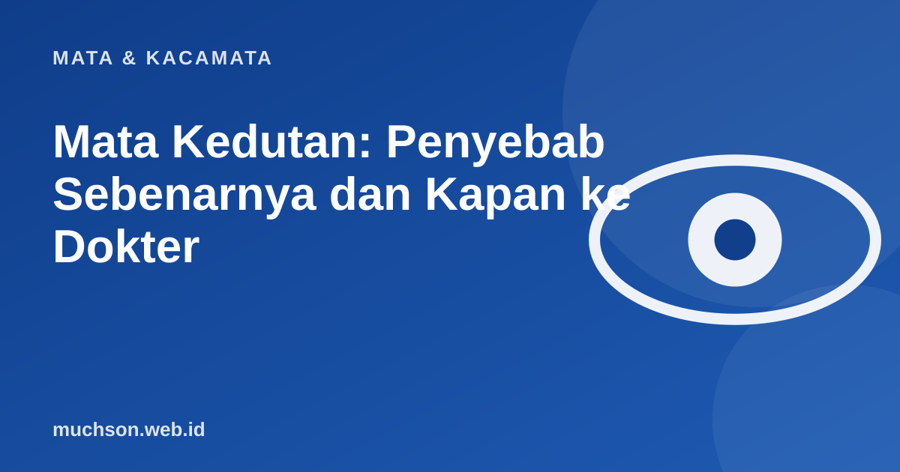

Beranda › Artikel › Mata & Kacamata
Mata & KacamataMata Kedutan: Penyebab Sebenarnya dan Kapan ke Dokter
Kelopak mata tiba-tiba bergetar sendiri, kadang beberapa detik, kadang berulang seharian. Di Indonesia, kedutan mata sering dikaitkan dengan pertanda. Secara medis, kedutan kelopak mata yang paling umum disebut eyelid myokymia, dan hampir selalu tidak berbahaya. Artikel ini menjelaskan penyebab, cara meredakan, dan tanda yang perlu diperiksakan.

Apa itu kedutan kelopak mata?
Eyelid myokymia adalah kontraksi kecil berulang pada otot kelopak mata, paling sering kelopak bawah dan pada satu mata. EyeWiki dari American Academy of Ophthalmology menyebutnya bentuk paling umum dari kedutan wajah dan bersifat jinak (benign). Biasanya hilang sendiri dalam hitungan hari sampai beberapa minggu.
Pemicu yang sering
| Pemicu | Yang bisa dilakukan |
|---|---|
| Kurang tidur dan kelelahan | Tidur cukup dan teratur |
| Stres | Istirahat, teknik relaksasi, olahraga ringan |
| Kafein berlebihan (kopi, teh, minuman energi) | Kurangi beberapa hari dan amati |
| Mata lelah karena layar | Aturan 20-20-20, atur jarak dan kecerahan layar |
| Mata kering | Berkedip lebih sering, air mata buatan bila dianjurkan |
| Ukuran kacamata tidak sesuai | Periksa ulang ukuran kacamata |
Cara meredakan
- Perbaiki tidur beberapa malam berturut-turut.
- Kurangi kafein selama beberapa hari.
- Istirahatkan mata dari layar: setiap 20 menit, lihat benda sejauh sekitar 6 meter selama 20 detik.
- Kompres hangat lembut pada kelopak mata yang tertutup.
- Bila mata kering, konsultasikan penggunaan air mata buatan.
Kapan harus ke dokter?
Periksakan ke dokter, terutama dokter mata atau saraf, bila:
- Kedutan berlangsung lebih dari beberapa minggu tanpa membaik.
- Kelopak mata sampai tertutup penuh saat berkedut.
- Kedutan menyebar ke bagian wajah lain, seperti pipi atau sudut mulut.
- Disertai kelopak mata turun (ptosis), mata merah, bengkak, atau keluar kotoran.
- Disertai perubahan penglihatan.
Kondisi seperti blefarospasme (kedua kelopak menutup tanpa sengaja) atau spasme hemifasial (kedutan menjalar ke separuh wajah) berbeda dari kedutan biasa dan perlu penanganan medis.
Bagaimana dengan mitos kedutan?
Kepercayaan bahwa kedutan mata kiri atau kanan adalah pertanda akan menangis, mendapat rezeki, atau kedatangan tamu adalah bagian dari budaya, bukan penjelasan medis. Secara ilmiah, kedutan adalah reaksi otot dan saraf terhadap kelelahan, stres, atau iritasi. Kabar baiknya, penyebab ini bisa diatasi dengan istirahat dan kebiasaan sehat.
Tanya jawab
Apa penyebab mata kedutan?
Apakah mata kedutan berbahaya?
Berapa lama kedutan mata biasanya berlangsung?
Kapan kedutan mata perlu ke dokter?
Sumber dan bacaan lanjut
- EyeWiki (American Academy of Ophthalmology): Eyelid Myokymia
- Mata lelah karena layar (artikel terkait)
- Mata kering (artikel terkait)